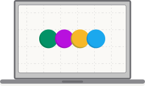
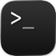
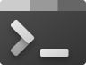
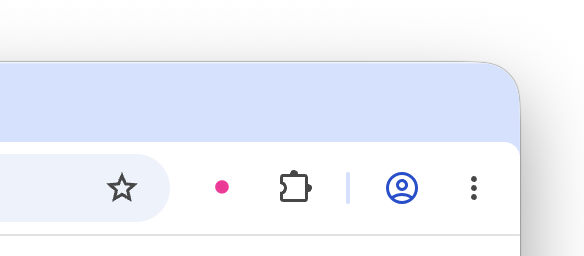
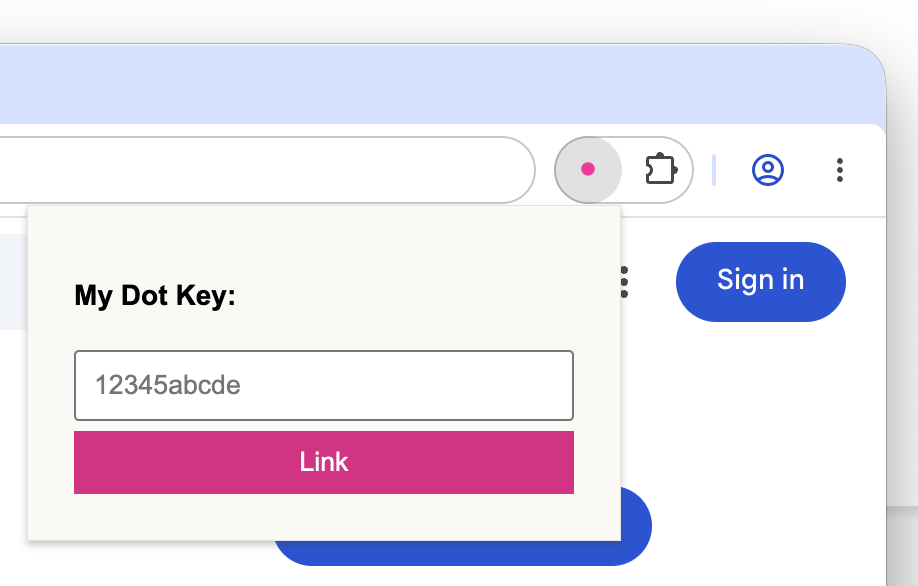

Let’s get your Dot set up.
Install a Dot on your computer to connect it to your security team.
Install on Mac
Install on Windows
Install on Chromebook
You’ll need your Dot key and a Mac account with administrator permissions.
You’ll need your Dot key and a Windows account with administrator permissions.
You’ll need your Dot key.
-
Open the Terminal application
It looks like this:

To find the Terminal application: Open Applications → Utilities → Terminal
Or press ⌘ Space and type “Terminal”. -
Run the installation command
Copy and paste this in Terminal then press Return.
How Dots work (opens in a new tab)curl -fsSL https://us.unmanned.team/install/setup.sh | sudo bash -
Enter admin password
When prompted, enter the admin password used to log in to this Mac, then press Return. Characters won’t appear as you type. This is normal.
-
Enter your Dot key
When you see “Enter dot key,” enter the key associated with your Dot, then press Return.
-
Confirm your Dot is running
Wait for the installation to finish. Look for this confirmation in Terminal:
✔︎ Dot loaded and running
Your Dot is installed and running on this Mac. You can now close Terminal.
-
Open the Terminal application as administrator
It looks like this:

To find the Terminal application: Press the Windows key and type “Terminal”.
On older Windows 10 computers, type “PowerShell” instead.Right-click the app to show the options menu: Choose “Run as administrator”.
-
Run the installation command
Copy and paste this in Terminal then press Enter.
How Dots work (opens in a new tab)powershell -NoProfile -ExecutionPolicy Bypass -Command "iex (New-Object Net.WebClient).DownloadString('https://us.unmanned.team/install/setup.ps1')" -
Enter your Dot key
When you see “Enter dot key,” enter the key associated with your Dot, then press Enter.
-
Confirm your Dot is running
Wait for the installation to finish. Look for this confirmation:
Installation complete! No reboot required. The script is already running.
Your Dot is installed and running on this computer.
-
Add the Unmanned extension
Get the Chrome extension (opens in a new tab) -
Select “Add to Chrome”
Review the requested permissions and select “Add extension”.
-
Open the Unmanned extension
In the toolbar, select the Unmanned extension. Don’t see it? Select the puzzle icon first.

-
Link your Dot
Paste your Dot key into the “My Dot Key” field and select “Link”.

My Dot Key:12345abcde Link